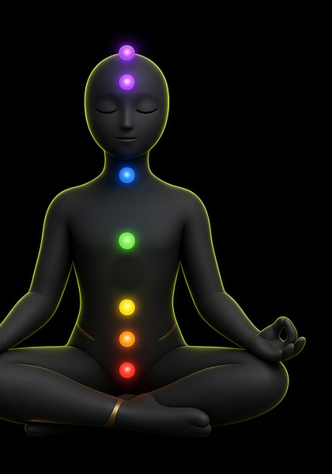

MEDITAR
Sete pontos na coluna, da base da pélvis até a coroa, e um fio que cresce com os dias. No zero está apagado. Os oito pontos laterais só aparecem ao concluir 15 de 15. Não é leitura clínica. O exemplo desta cena é 8 de 15.

Estudo isolado. A água aprovada não entra aqui. Não publica.
Sete pontos na coluna, da base da pélvis até a coroa, e um fio que cresce com os dias. No zero está apagado. Os oito pontos laterais só aparecem ao concluir 15 de 15. Não é leitura clínica. O exemplo desta cena é 8 de 15.
